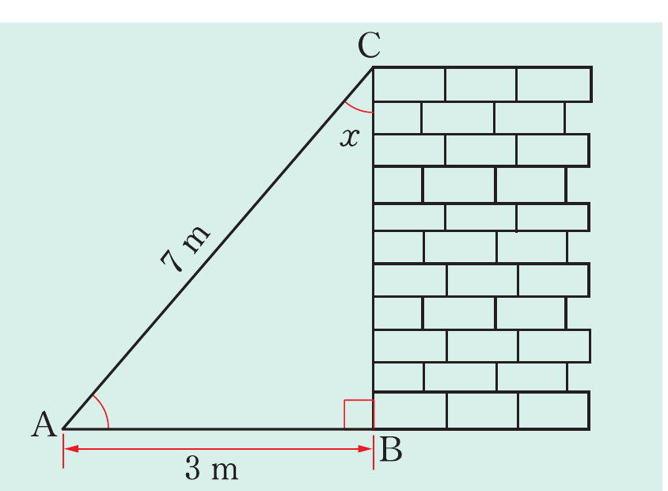

Example 8.20
A ladder 7 m long leans against a vertical wall so that the distance between the foot of the ladder and the wall is 3 m. Find the following:
- (a) the angle which the ladder makes with the wall.
- (b) the height above the ground at which the upper end of the ladder touches the wall.
Solution
Consider the following figure.

Let AC be the length of the ladder and AB be the distance along the horizontal ground. From the figure, AB = 3 m and AC = 7 m.
Therefore, the ladder makes an angle of 25° 23′ with the wall.
Therefore, the ladder reaches 6.32 m up the wall (3 significant figures).